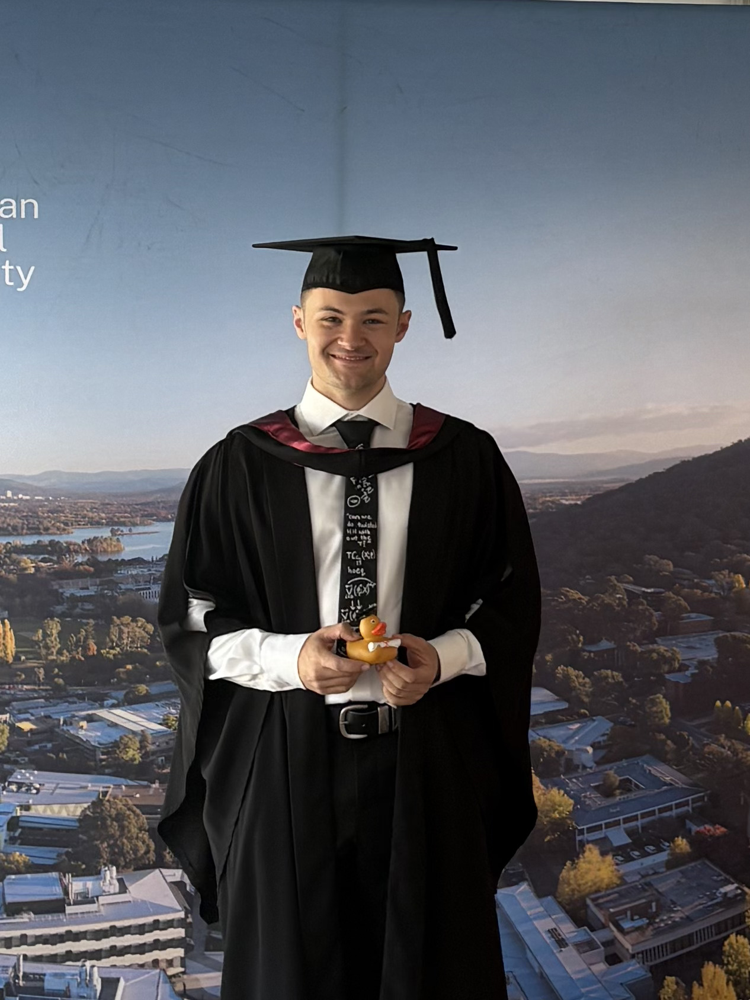

About Me
Hi, I'm Tobin. I completed my honours degree in 2025 with First Class Honours under the supervision of Dr. Vigleik Angeltveit.
I have an honours degree in mathematics and a degree in statistics, both from The Australian National University. My thesis, titled 'Twisted Topological Hochschild Homology', explored equivariant stable homotopy theory and twisted topological cyclic homology.
Get in Touch
I am currently applying for PhD programs for a 2026 or 2027 start and am always open to discussing mathematics, research opportunities, or powerlifting.
